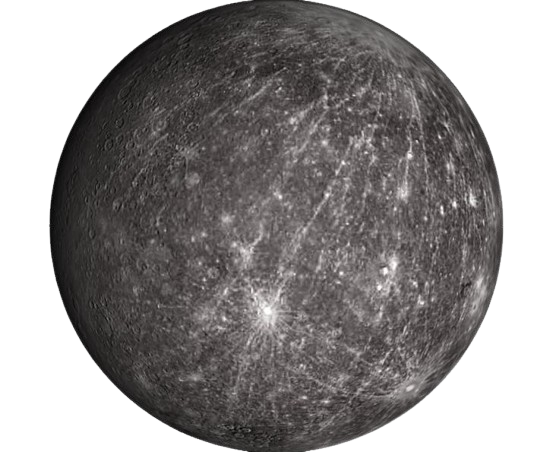

Mercurio
Mercurio es el planeta más cercano al Sol y el más pequeño del sistema solar. No tiene atmósfera significativa, por lo que las temperaturas cambian drásticamente entre el día y la noche.
Datos importantes
- Distancia al Sol: 58 millones de km
- Duración del año: 88 días
- No tiene lunas
- Es el planeta más rápido orbitando el Sol